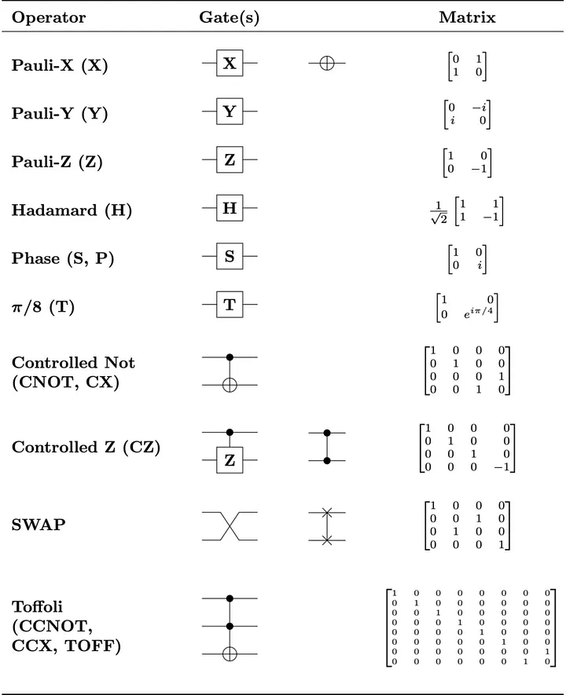

Algebra Linear para computção quântica
A álgebra linear é a linguagem da computação quântica. Embora você não precise ter o conhecimento
para implementar ou escrever programas quânticos, ela é amplamente usada para descrever os estados
de qubits e as operações quânticas, além de prever o que um computador quântico faz em resposta a
uma sequência de instruções.
Um conhecimento básico de álgebra linear pode ajudar você a entender como funcionam os algoritmos
quânticos. No mínimo, o ideal é saber trabalhar com os vetores e a multiplicação de matrizes.
Vetores e Matrizes
Um qubit pode estar em um estado de 1 ou 0, uma sobreposição ou ambos. Usando álgebra linear, o estado de um qubit é escrito como um vetor e é representado por uma só coluna matriz. Os elementos da matriz representam a probabilidade de o qubit entrar em colapso para uma forma ou outra, com |a|^2 sendo a probabilidade de um colapso para zero e |b|^2, a probabilidade de um colapso para um. Para saber mais sobre Vetores e matrizes
Portas lógicas na computação quântica
Na eletrônica digital, os circuitos são constituídos por portas lógicas NOT, AND, OR, XOR, e derivadas, que criam relações lógicas com os bits. Já na computação quântica, existem as portas lógicas quânticas, que são matrizes unitárias responsáveis por modificar os estados dos qubits.
Algoritimo de Deutsch oracle
Ele é usado para diferenciar funções constantes de funções balanceadas.
O algoritmo é executado em um computador quântico e é capaz de fornecer a resposta correta com
apenas uma consulta à função. Isso é significativamente mais rápido do que os algoritmos clássicos,
que exigem duas consultas para resolver o mesmo problema. O algoritmo de Deutsch é um dos
primeiros exemplos de como a computação quântica pode ser usada para superar limitações da
computação clássica. Ele é frequentemente usado como um exemplo introdutório de algoritmos
quânticos.
O algoritmo começa com dois qubits, que são inicializados em um estado conhecido como estado
de superposição.Em seguida, uma porta quântica é aplicada aos qubits, que realiza uma transformação
sobre eles. Depois disso, outra porta quântica é aplicada aos qubits, que realiza outra
transformação sobre eles. Finalmente, uma medição é feita nos qubits para determinar o resultado.
A chave para o algoritmo é que a segunda transformação depende da função que está sendo
consultada. Se a função for constante, a segunda transformação não fará nada. Se a função for
balanceada, a segunda transformação terá um efeito mensurável nos qubits. Portanto, medindo os
qubits após a segunda transformação, podemos determinar se a função é constante ou balanceada.
Indicação para começar
No Microsoft Learn pode aprender os conceitos fundamentais da computação quântica,
identificar os tipos de problemas que os algoritmos quânticos podem solucionar com mais eficiência
do que os algoritmos clássicos, criar programas quânticos básicos usando o Quantum Development Kit
e o Q#, interagir com o serviço de nuvem do Azure Quantum, adaptar e criar aplicativos em Q# para
executá-los no hardware
O Azure Quantum é uma plataforma de computação quântica que permite aos usuários criar soluções
de computação quântica em uma seleção diversificada do hardware quântico atual. O Azure Quantum
agora é a capacidade de misturar computação clássica e quântica e desbloquear uma nova geração de
algoritmos híbridos, trazendo pesquisa e experimentação com a geração atual de computadores
quânticos para uma fase nova e emocionante.
Sites:
IBM
Microsoft Learn
Azure Quantum